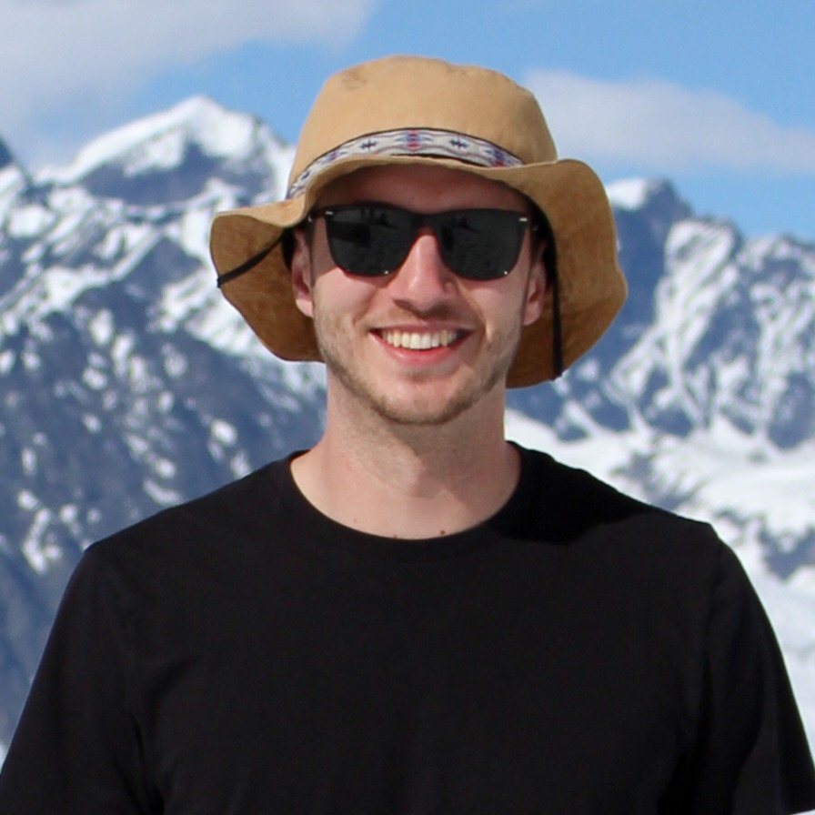

Samuel (Sam) T. Woodrich

Sam has led and contributed to several field studies, including carbon stock and biodiversity estimates in Tenmile Creek, Oregon, native ungulate impacts on patch dynamics on Cummins Ridge, riparian vegetation response to wolf reintroduction in Yellowstone National Park, and avian presence estimates in the High Cascades, to name a few. Additionally, Sam is a scientific writer and has been published in Restoration Ecology, Food Webs, and BioScience.
In his spare time, Sam is usually bird watching, botanizing, hiking, or engaged in some other outdoor activity.
EducationIn Progress - PhD in Environmental Science, Ecology. Oregon State University
2022 - Master of Science in Environmental Science, Ecology. Oregon State University
2013 - Bachelor of Science in Environmental Sciences, Environmental Management. Northern Arizona University